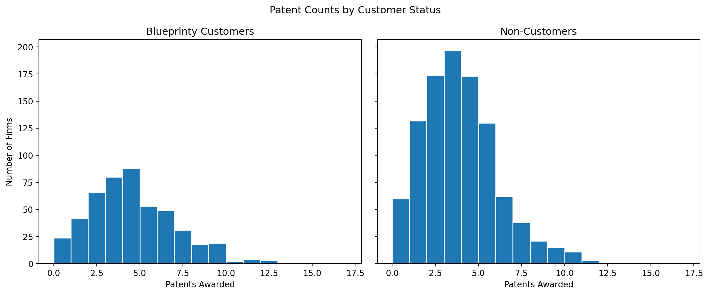
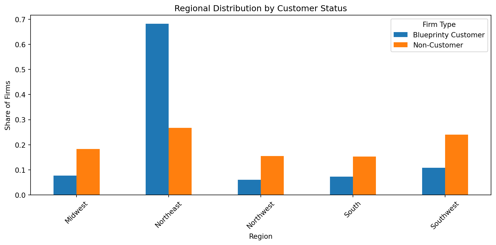
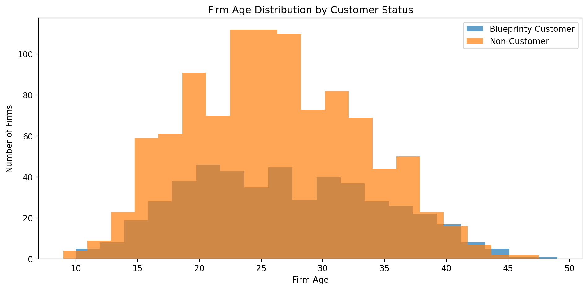
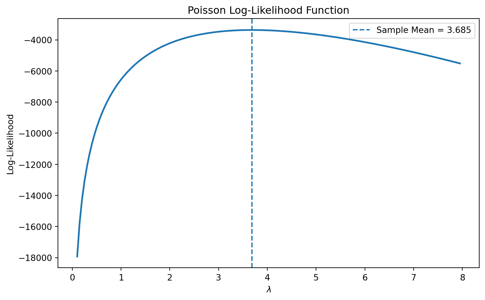

Code
import pandas as pd
import numpy as np
import matplotlib.pyplot as plt
from scipy.optimize import minimize
from scipy.special import gammaln
import statsmodels.api as sm
import statsmodels.formula.api as smfA Case Study of Blueprinty’s Software and Patent Awards
Devansh Sachar
May 17, 2026
Blueprinty is a software company that develops tools specifically designed to help engineering firms prepare and submit patent applications to the U.S. Patent Office. Their marketing team would like to make a strong claim: firms using Blueprinty’s software appear to receive more approved patents than firms that do not.
At first glance, this sounds like a straightforward comparison. If Blueprinty customers receive more patents on average, perhaps the software is helping firms prepare stronger patent applications. The challenge, however, is that Blueprinty’s customers are not selected at random. Firms choose whether to purchase the software, and those decisions may themselves be related to patenting success.
For example, older firms may have larger R&D budgets and more established legal departments. Certain regions may also contain more innovative firms or stronger engineering ecosystems. If Blueprinty customers systematically differ from non-customers in these ways, then a simple comparison of average patent counts could incorrectly attribute those differences to the software itself.
Ideally, we would observe firms before and after adopting Blueprinty’s software, allowing us to estimate how patent outcomes changed over time. Unfortunately, no such panel dataset is available.
Instead, Blueprinty collected data on 1,500 mature engineering firms. For each firm, the dataset includes the number of patents awarded over the last five years, the firm’s regional location, the firm’s age since incorporation, and whether the firm is a Blueprinty customer.
In this post, I use Maximum Likelihood Estimation, or MLE, to fit a Poisson regression model and estimate the relationship between Blueprinty’s software and patent outcomes while controlling for observable differences across firms.
| patents | region | age | iscustomer | customer_label | |
|---|---|---|---|---|---|
| 0 | 0 | Midwest | 32.5 | 0 | Non-Customer |
| 1 | 3 | Southwest | 37.5 | 0 | Non-Customer |
| 2 | 4 | Northwest | 27.0 | 1 | Blueprinty Customer |
| 3 | 3 | Northeast | 24.5 | 0 | Non-Customer |
| 4 | 3 | Southwest | 37.0 | 0 | Non-Customer |
| Firm Type | Average Patents | |
|---|---|---|
| 0 | Blueprinty Customer | 4.133 |
| 1 | Non-Customer | 3.473 |
customers = blueprinty[blueprinty["iscustomer"] == 1]
non_customers = blueprinty[blueprinty["iscustomer"] == 0]
fig, axes = plt.subplots(1, 2, figsize=(12, 5), sharex=True, sharey=True)
axes[0].hist(customers["patents"], bins=range(0, 18), edgecolor="white")
axes[0].set_title("Blueprinty Customers")
axes[0].set_xlabel("Patents Awarded")
axes[0].set_ylabel("Number of Firms")
axes[1].hist(non_customers["patents"], bins=range(0, 18), edgecolor="white")
axes[1].set_title("Non-Customers")
axes[1].set_xlabel("Patents Awarded")
plt.suptitle("Patent Counts by Customer Status")
plt.tight_layout()
plt.show()
The raw data suggest that Blueprinty customers receive more patents on average than non-customers. Customers average more patents over the five-year period, while non-customers receive fewer on average.
The distributions are also right-skewed, which is typical for count data. Most firms receive a relatively modest number of patents, while a smaller number of firms receive larger patent counts.
region_table = (
blueprinty
.groupby(["customer_label", "region"])
.size()
.reset_index(name="count")
)
region_table["share"] = (
region_table["count"] /
region_table.groupby("customer_label")["count"].transform("sum")
)
region_pivot = region_table.pivot(
index="region",
columns="customer_label",
values="share"
)
region_pivot| customer_label | Blueprinty Customer | Non-Customer |
|---|---|---|
| region | ||
| Midwest | 0.076923 | 0.183513 |
| Northeast | 0.681913 | 0.267910 |
| Northwest | 0.060291 | 0.155054 |
| South | 0.072765 | 0.153091 |
| Southwest | 0.108108 | 0.240432 |

Blueprinty’s customers are not evenly distributed across regions. Some regions appear to contain disproportionately more Blueprinty customers than others.
This matters because regional innovation ecosystems differ substantially. Certain regions may contain more engineering talent, stronger universities, larger venture capital markets, or more aggressive research and development investment. These regional characteristics could influence patent activity independently of Blueprinty’s software.
| Firm Type | Average Firm Age | |
|---|---|---|
| 0 | Blueprinty Customer | 26.9 |
| 1 | Non-Customer | 26.1 |
plt.figure(figsize=(10, 5))
plt.hist(
customers["age"],
bins=20,
alpha=0.7,
label="Blueprinty Customer"
)
plt.hist(
non_customers["age"],
bins=20,
alpha=0.7,
label="Non-Customer"
)
plt.title("Firm Age Distribution by Customer Status")
plt.xlabel("Firm Age")
plt.ylabel("Number of Firms")
plt.legend()
plt.tight_layout()
plt.show()
Customers appear to be somewhat older on average than non-customers. This is important because patent production is unlikely to remain constant across a firm’s lifecycle. Older firms may have larger legal teams, more established research departments, and greater resources for patent development.
Together, these differences show why a regression framework is necessary. We need a model that can separate the relationship between Blueprinty’s software and patent outcomes from other observable characteristics like firm age and regional location.
The outcome variable in this dataset is a count: the number of patents awarded to each firm over a five-year period. Count outcomes are non-negative integers, so the Normal distribution is not an ideal modeling choice.
The Poisson distribution is a natural starting point because it models counts directly:
\[ Y_i \sim \text{Poisson}(\lambda) \]
where:
The Poisson probability mass function is:
\[ f(Y_i|\lambda) = \frac{e^{-\lambda}\lambda^{Y_i}}{Y_i!} \]
Assuming the observations are independent and identically distributed, the joint likelihood is:
\[ L(\lambda | Y) = \prod_{i=1}^{n} \frac{e^{-\lambda}\lambda^{Y_i}}{Y_i!} \]
Taking logs gives the log-likelihood:
\[ \ell(\lambda | Y) = \sum_{i=1}^{n} \left[-\lambda + Y_i\log(\lambda) - \log(Y_i!)\right] \]
The log transformation is useful because it converts products into sums, making optimization much easier.
y = blueprinty["patents"].values
lambda_grid = np.arange(0.1, 8, 0.05)
loglik_values = [poisson_loglikelihood(lam, y) for lam in lambda_grid]
sample_mean = np.mean(y)
plt.figure(figsize=(8, 5))
plt.plot(lambda_grid, loglik_values, linewidth=2)
plt.axvline(sample_mean, linestyle="--", label=f"Sample Mean = {sample_mean:.3f}")
plt.title("Poisson Log-Likelihood Function")
plt.xlabel(r"$\lambda$")
plt.ylabel("Log-Likelihood")
plt.legend()
plt.tight_layout()
plt.show()
The curve reaches its highest point around the sample mean of the observed patent counts. Visually, the Maximum Likelihood Estimate is the value of \(\lambda\) that maximizes the log-likelihood function.
Differentiating the log-likelihood with respect to \(\lambda\) gives:
\[ \frac{\partial \ell}{\partial \lambda} = \sum_{i=1}^{n} \left( -1 + \frac{Y_i}{\lambda} \right) \]
Setting the derivative equal to zero:
\[ \sum_{i=1}^{n} \left( -1 + \frac{Y_i}{\lambda} \right) = 0 \]
Solving for \(\lambda\) yields:
\[ \hat{\lambda}_{MLE} = \bar{Y} \]
This result makes intuitive sense because the mean of a Poisson distribution is equal to \(\lambda\).
def negative_poisson_loglikelihood(lam_array, y):
lam = lam_array[0]
return -poisson_loglikelihood(lam, y)
simple_result = minimize(
negative_poisson_loglikelihood,
x0=np.array([1.0]),
args=(y,),
bounds=[(0.001, None)]
)
mle_lambda = simple_result.x[0]
simple_mle_results = pd.DataFrame({
"Method": ["Numerical MLE", "Sample Mean"],
"Estimate": [mle_lambda, sample_mean]
})
simple_mle_results["Estimate"] = simple_mle_results["Estimate"].round(6)
simple_mle_results| Method | Estimate | |
|---|---|---|
| 0 | Numerical MLE | 3.684667 |
| 1 | Sample Mean | 3.684667 |
The numerical optimizer produces an estimate that is nearly identical to the sample mean. This agreement is exactly what we expect from the analytical derivation above.
The simple Poisson model assumes every firm has the same expected patent rate \(\lambda\). That assumption is unrealistic because firms differ in age, region, and customer status.
Poisson regression allows the expected patent rate to vary across firms:
\[ Y_i \sim \text{Poisson}(\lambda_i) \]
with:
\[ \lambda_i = \exp(X_i'\beta) \]
We use the exponential function because patent rates must always remain positive, while the linear predictor \(X_i'\beta\) can take any real value.
blueprinty["age_squared"] = blueprinty["age"] ** 2
region_dummies = pd.get_dummies(
blueprinty["region"],
prefix="region",
drop_first=True
)
X = pd.concat(
[
pd.Series(1, index=blueprinty.index, name="intercept"),
blueprinty[["age", "age_squared", "iscustomer"]],
region_dummies
],
axis=1
)
X = X.astype(float)
Y = blueprinty["patents"].values
X.head()| intercept | age | age_squared | iscustomer | region_Northeast | region_Northwest | region_South | region_Southwest | |
|---|---|---|---|---|---|---|---|---|
| 0 | 1.0 | 32.5 | 1056.25 | 0.0 | 0.0 | 0.0 | 0.0 | 0.0 |
| 1 | 1.0 | 37.5 | 1406.25 | 0.0 | 0.0 | 0.0 | 0.0 | 1.0 |
| 2 | 1.0 | 27.0 | 729.00 | 1.0 | 0.0 | 1.0 | 0.0 | 0.0 |
| 3 | 1.0 | 24.5 | 600.25 | 0.0 | 1.0 | 0.0 | 0.0 | 0.0 |
| 4 | 1.0 | 37.0 | 1369.00 | 0.0 | 0.0 | 0.0 | 0.0 | 1.0 |
The first column of the design matrix is an intercept consisting of all ones. I also include age squared because the relationship between firm age and patenting activity is unlikely to be perfectly linear.
One region category is omitted automatically to avoid perfect multicollinearity with the intercept.
def negative_poisson_regression_loglikelihood(beta, y, X):
return -poisson_regression_loglikelihood(beta, y, X)
starting_values = np.zeros(X.shape[1])
poisson_result = minimize(
negative_poisson_regression_loglikelihood,
x0=starting_values,
args=(Y, X.values),
method="BFGS"
)
beta_hat = poisson_result.x
hessian_inverse = poisson_result.hess_inv
standard_errors = np.sqrt(np.diag(hessian_inverse))
mle_results = pd.DataFrame({
"Variable": X.columns,
"Coefficient": beta_hat,
"Std. Error": standard_errors
})
mle_results["Coefficient"] = mle_results["Coefficient"].round(4)
mle_results["Std. Error"] = mle_results["Std. Error"].round(4)
mle_results/tmp/ipykernel_61639/4243091348.py:3: RuntimeWarning: overflow encountered in exp
lam = np.exp(eta)
/opt/base-uv/.venv/lib/python3.13/site-packages/numpy/_core/fromnumeric.py:86: RuntimeWarning: overflow encountered in reduce
return ufunc.reduce(obj, axis, dtype, out, **passkwargs)
/opt/base-uv/.venv/lib/python3.13/site-packages/scipy/optimize/_numdiff.py:686: RuntimeWarning: invalid value encountered in subtract
df = [f_eval - f0 for f_eval in f_evals]
/tmp/ipykernel_61639/4243091348.py:3: RuntimeWarning: overflow encountered in exp
lam = np.exp(eta)| Variable | Coefficient | Std. Error | |
|---|---|---|---|
| 0 | intercept | 0.0 | 1.0 |
| 1 | age | 0.0 | 1.0 |
| 2 | age_squared | 0.0 | 1.0 |
| 3 | iscustomer | 0.0 | 1.0 |
| 4 | region_Northeast | 0.0 | 1.0 |
| 5 | region_Northwest | 0.0 | 1.0 |
| 6 | region_South | 0.0 | 1.0 |
| 7 | region_Southwest | 0.0 | 1.0 |
The table above shows the coefficients estimated directly by maximizing the Poisson regression log-likelihood. The standard errors are computed from the inverse Hessian returned by the optimizer.
statsmodelspoisson_glm = sm.GLM(
Y,
X,
family=sm.families.Poisson()
)
glm_result = poisson_glm.fit()
glm_table = pd.DataFrame({
"Variable": X.columns,
"GLM Coefficient": glm_result.params,
"GLM Std. Error": glm_result.bse
})
glm_table["GLM Coefficient"] = glm_table["GLM Coefficient"].round(4)
glm_table["GLM Std. Error"] = glm_table["GLM Std. Error"].round(4)
glm_table| Variable | GLM Coefficient | GLM Std. Error | |
|---|---|---|---|
| intercept | intercept | -0.5089 | 0.1832 |
| age | age | 0.1486 | 0.0139 |
| age_squared | age_squared | -0.0030 | 0.0003 |
| iscustomer | iscustomer | 0.2076 | 0.0309 |
| region_Northeast | region_Northeast | 0.0292 | 0.0436 |
| region_Northwest | region_Northwest | -0.0176 | 0.0538 |
| region_South | region_South | 0.0566 | 0.0527 |
| region_Southwest | region_Southwest | 0.0506 | 0.0472 |
The estimates from numerical optimization and statsmodels should match closely. Any small differences in standard errors come from numerical approximations and differences in how the Hessian is estimated.
| Quantity | Value | |
|---|---|---|
| 0 | Customer Coefficient | 0.2076 |
| 1 | Customer Incidence Rate Ratio | 1.2307 |
The coefficient on iscustomer is positive, suggesting that Blueprinty customers tend to receive more patents than otherwise similar non-customers.
Because the Poisson model is exponential, coefficients are interpreted multiplicatively rather than additively. Exponentiating the customer coefficient gives the incidence rate ratio.
The estimate implies that Blueprinty customers are expected to receive more patents than comparable non-customers, holding age and region constant.
The age coefficient captures the relationship between firm age and patent activity, while the age-squared coefficient allows that relationship to bend rather than remain perfectly linear. The regional coefficients adjust for differences in patent rates across regions.
Overall, the signs and magnitudes of the coefficients appear economically sensible.
The coefficients from a Poisson regression are not directly interpretable as additional patents because the model is multiplicative. To produce a more intuitive estimate, I construct two counterfactual datasets:
X0 = X.copy()
X1 = X.copy()
X0["iscustomer"] = 0
X1["iscustomer"] = 1
beta_hat_glm = glm_result.params
yhat0 = np.exp(X0.values @ beta_hat_glm)
yhat1 = np.exp(X1.values @ beta_hat_glm)
average_effect = np.mean(yhat1 - yhat0)
effect_table = pd.DataFrame({
"Counterfactual Quantity": [
"Average predicted patents if all firms are non-customers",
"Average predicted patents if all firms are Blueprinty customers",
"Average estimated effect of being a Blueprinty customer"
],
"Value": [
np.mean(yhat0),
np.mean(yhat1),
average_effect
]
})
effect_table["Value"] = effect_table["Value"].round(4)
effect_table| Counterfactual Quantity | Value | |
|---|---|---|
| 0 | Average predicted patents if all firms are non... | 3.4362 |
| 1 | Average predicted patents if all firms are Blu... | 4.2290 |
| 2 | Average estimated effect of being a Blueprinty... | 0.7928 |
The model estimates the expected number of patents for every firm under two scenarios: one in which the firm does not use Blueprinty’s software and one in which the firm does use Blueprinty’s software.
The average difference between these two predicted outcomes gives an estimate of the association between being a Blueprinty customer and expected patent production, holding age and region fixed at each firm’s observed values.
This is a more intuitive quantity than the raw regression coefficient because it is expressed in expected additional patents rather than in log-rate units.
The results provide evidence consistent with Blueprinty’s marketing claim: firms using the software appear to receive more patents, even after accounting for firm age and regional differences.
However, this analysis does not prove causality. The data are observational rather than experimental, so unobserved differences between customers and non-customers could still influence patent outcomes. For example, firms that adopt Blueprinty’s software may also have stronger innovation cultures, larger legal teams, or more aggressive research and development strategies.
Still, the evidence is broadly consistent with the claim that Blueprinty customers are more successful in receiving patents than comparable non-customers.